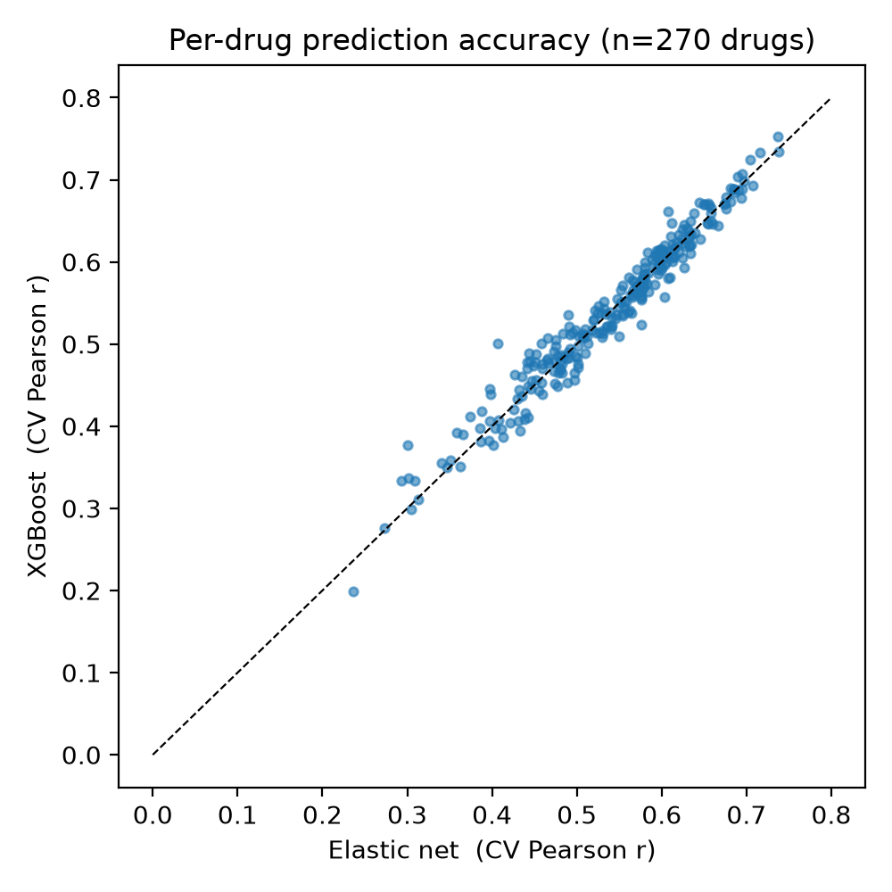
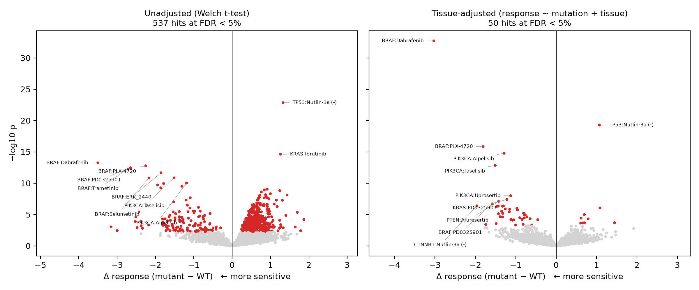
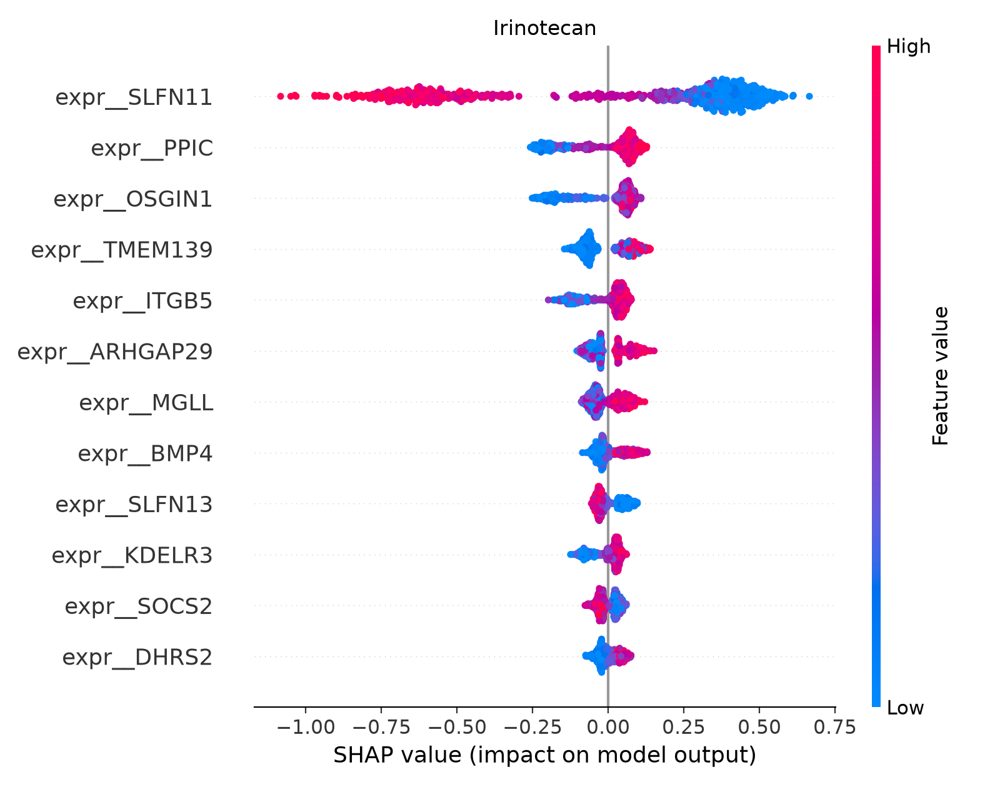
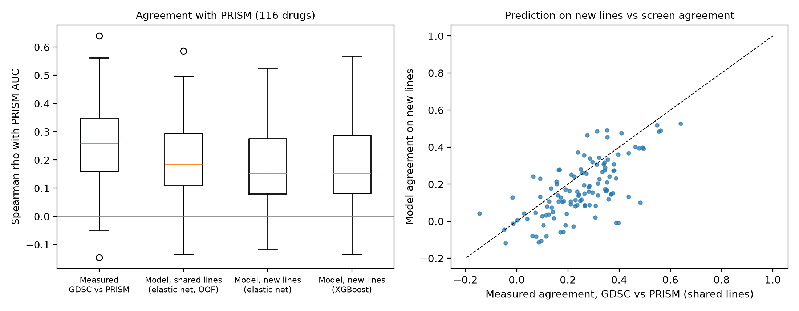

Research / Cancer genomics
Pharmacogenomic Drug Response Modeling with External Validation
Code and full results on GitHubSummary
Cancer cell line screens are the main public resource for linking tumor genomics to drug response. This project predicts the response of 713 cell lines to 270 drugs from RNA-seq and mutation data, searches for mutation biomarkers of sensitivity, and then asks the question most analyses skip: do the models and biomarkers hold up in a different screen, measured with a different assay, on cell lines the models never saw?
Key result. The models transfer to the independent PRISM screen for 62 of 116 drugs, and significant biomarkers replicate ten times more often than chance. Accuracy within one screen did not predict accuracy in the other.
Data
| Source | Content | Use |
|---|---|---|
| GDSC2 release 8.5 (Sanger) | Dose-response (LN IC50) for 286 drugs and 969 cell lines | Training and association testing |
| DepMap 24Q4 (Broad) | RNA-seq expression and hotspot mutations | Model features |
| PRISM Repurposing 20Q2 (Broad) | Dose-response AUC from an independent pooled screen | External validation only |
713 cell lines had both drug response and DepMap data. Features were the 2,000 most variable genes, 112 drug-target genes and 21 recurrently mutated hotspot genes. All downloads are pinned and checksum verified so the analysis can be reproduced exactly.
Approach
- Prediction: elastic net and XGBoost per drug with nested cross-validation (5 outer folds, inner tuning), scaling fit inside each fold to prevent leakage.
- Biomarkers: mutation-drug association tests with a tissue-adjusted linear model,
response ~ mutation + tissue, and Benjamini-Hochberg FDR control. - Interpretation: SHAP attribution on the best-predicted drugs, with known biomarkers as positive controls.
- External validation: 116 drugs matched to PRISM; models trained on all GDSC lines predicted 236 PRISM cell lines that were never screened in GDSC.
- Engineering: profiling showed the elastic net search took about 90% of runtime; narrowing it made fitting 5 to 12 times faster with no change in held-out accuracy.
Results
1. Prediction: a sparse linear model is as good as gradient boosting
| Model | Median CV Pearson r (IQR), 270 drugs |
|---|---|
| Elastic net | 0.554 (0.477 to 0.607) |
| XGBoost | 0.546 (0.479 to 0.610) |
XGBoost was better for 132 of 270 drugs (Wilcoxon p = 0.56). The best-predicted drugs were Nutlin-3a (r = 0.75), the MCL1 inhibitor AZD5991 (0.73) and the BCL2 inhibitor venetoclax (0.72).

2. Biomarkers: tissue of origin inflates discovery tenfold
Without adjustment, 537 mutation-drug associations passed FDR < 5%. Most reflected tissue: EZH2 mutations (80% in lymphoid lines) and KRAS mutations (75% in lung, pancreas and bowel) stood in for tissue-wide drug sensitivity. Adjusting for tissue left 50 associations, mostly known pathway biology.
| Test | FDR < 5% hits | EZH2 hits | KRAS hits |
|---|---|---|---|
| Unadjusted | 537 | 70 | 214 |
| Tissue-adjusted | 50 | 0 | 12 |

3. Interpretation: SHAP recovers known biology
SHAP ranked SLFN11 expression as the dominant predictor of irinotecan response, with high SLFN11 meaning greater sensitivity, the established direction for topoisomerase I inhibitors. BCL2 ranked first for venetoclax, and MDM2 expression with TP53 mutation led for Nutlin-3a.

4. External validation in PRISM
| Agreement with PRISM, median Spearman rho over 116 drugs | rho |
|---|---|
| Measured GDSC vs measured PRISM, same cell lines | 0.26 |
| Model predictions, shared cell lines | 0.18 |
| Model predictions, 236 new cell lines | 0.15 |
The two screens agree only modestly on the same drug and cell line, which caps any model. Within that ceiling the models transfer: predictions on unseen cell lines correlate significantly with PRISM for 62 of 116 drugs. Transfer tracks screen agreement (Spearman 0.65 across drugs), not within-GDSC accuracy (0.13, not significant).
| GDSC association | Tested in PRISM | Same direction | Replicated (p < 0.05) |
|---|---|---|---|
| Significant (FDR < 5%) | 30 | 87% | 53% |
| Not significant (baseline) | 1,605 | 54% | 5% |

Takeaways
- Tissue adjustment is essential in pan-cancer biomarker scans; without it, most hits are tissue effects.
- Cross-validation within one screen overstates how well a drug response model will generalize.
- BRAF, PIK3CA and RAS biomarkers replicate across screens and assays.